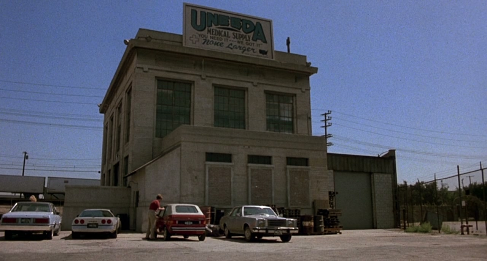

The events portrayed in this film are all true.
The names are real names of real people and real organizations.
JULY 3, 1984 5.30 PM EASTERN DAYLIGHT TIME
Hey, Frank! It's time to go home. What do you say?
I got another hour's work to do. The kid's gonna stay and I'll show him the ropes.
You lock up for me before you go? Fourth of July weekend, buddy boy. I gotta move.
Oh, yeah. Well, you have a nice Fourth and I'll see you Sunday at the barbecue.
You'd better believe it.
Kid, I wanna tell you something and I mean this sincerely.
No matter what happens, don't name it after me.
Take it easy, Frank!
That Burt's a joker. OK, Freddy, follow me and learn something.
We got an order from the St Louis University Medical School.
They want two adult female skeletons with perfect teeth. That's two AF-PT.
OK, so you come over here to the A section. That's A for adult, see.
That's divided up into two sections.
The M for male and the F for?
Female.
Good boy. Now, the PT.
You might think that's "pretty tough", but no.
Perfect teeth.
Very good.
Now, you get some excelsior and lay it in that crate.
Make a nice little beddy-bye for this little lady.
OK?
Good. We want her to be comfortable. Help me get her in. Grab her legs.
OK.
Now you get some of that Styrofoam popcorn.
Spread it all around.
Don't be stingy. Uncle Burt's paying for this. More, Freddy, more.
OK, that's fine. Now, spread it around.
That's right. You're doing very nice work. You'll be fine in the warehouse business.
Frank, where do we get these skeletons from?
Oh, from India.
India?
International treaty. All skeletons come from India.
No kidding. How come?
How the hell do I know?
The important thing is, where do they get all the skeletons with perfect teeth?
I'm going to ask you a serious question. How many people you know die with a beautiful, perfect set of choppers in their puss, huh?
Nobody I can think of.
I think there's a skeleton farm in India.
Jesus!
Come on, kid. Follow your uncle here.
Here we go. I don't have to tell you what these are for. Ba, ba, ba, boom!
Here we've got the prosthetic devices all around here.
Look under here. Wheelchairs.
Now, Freddy, here's something you don't see very often. You're a privileged person.
These are split dogs. Yep, for veterinarian schools.
We get a lot of orders for split dogs.
That's really rad.
Don't fool around. You're learning.
Over here, Freddy, is where we keep the fresh cadavers.
We sell these to medical schools and to the US Army for ballistic tests.
Well, say hello.
We usually get more inventory than this, but we'll have a shipment on Monday.
How many bodies are in here usually?
Well, you don't want to be overstocked. It's like the restaurant business.
You don't want your inventory to lose its freshness.
Tell you what I'll do, kid. Teach you how to fill out these shipping forms.
Look alive.
Are we gonna party tonight or what?
Yeah, we are.
Well, where?
I don't know.
We could go to the park.
The cops said they'd shoot us if we go back in the park.
I ain't in no mood to die tonight.
I like death.
I like death with sex. How about you, Casey?
Yeah. Fuck off and die.
Where we gonna party, Tina?
Oh, you guys, I'm meeting Freddy when he gets off work.
Where you meeting him?
At this medical supply warehouse.
Oh, no! He got a job? What a dick!
Well, shit! Why didn't you say so? Why don't we all go pick Freddy up?
Freddy always knows where to party.
Frank?
Yeah, kid?
What's the weirdest thing you ever saw in here?
Kid, I have seen weird things come and I have seen weird things go, but the weirdest thing I ever saw just had to cap it all.
Oh, yeah? What's that?
Let me ask you a question, kid.
Did you see that movie Night of the Living Dead?
Yeah. That's the one where the corpses start eatin' the people. What about it?
Did you know that movie was based on a true case?
Come on. You're shittin' me, right?
I've never been more serious in my life.
That's not possible. They showed zombies takin' over the world.
Well, they changed it all around. What really happened was, back in 1969, in Pittsburgh at the VA hospital, there was a chemical spill and all that stuff kinda leaked down into the morgue, and it made all the dead bodies kinda jump around as though it was alive.
What chemical?
245 trioxin, it's called.
It was to kinda spray on marijuana or something, and the Darrow Chemical Company was trying to develop it for the army.
They told the guy who made the movie that, if he told the true story, they'd just sue his ass off. So he changed all the facts around.
So what really happened?
Well, they closed it all down, see.
The army shipped all that contaminated dirt and all those dead bodies out.
And they kept it a secret. Shh!
Well, so how come you know about it?
Well, typical army fuck-up.
The transportation department got the orders crossed.
They shipped those bodies here, instead of to the Darrow Chemical Company.
Hello.
Oh, hi, honey.
No, I'll be home in about an hour. You keep the pot roast hot, OK?
Yeah, sure. I love you too, honey.
Yeah. Kiss, kiss.
Wanna see 'em?
See 'em?
The corpses.
What are you talkin' about?
They're down in the basement.
No.
Come on.
No way.
Hey, mind the third step. It's a bitch.
You mean they just left the bodies here?
Well, you know the army.
And they've been here all this time?
14 years, as I recall.
No kidding.
There they are.
There's bodies in there?
Oh, shit. Look at that.
You say that thing was alive?
So they say.
Oh, God! Hey, these things don't leak, do they?
Leak? Hell, no. These things were made by the US Army Corps of Engineers.
Oh, fuck!
Hello, dear. How was your day?
The usual. Crap.
Oh, I'm sorry.
What's for dinner?
Your favorite. Lamb chops.
I had them for lunch.
Yes, it's me, checking in from Station 3 at 1600... Make that 1601 hours.
I'll be home all evening. Right.
It's nerve-racking to live around that equipment all the time.
They have to be able to reach me 24 hours a day, wherever I am.
All that microwave stuff affects my oven.
When we find them, it can be taken out.
But when will you find them?
Christ, Ethel! I don't know!
Maybe we'll never find them.
We've been through all this before. They could be anywhere.
7.30 PM EASTERN DAYLIGHT TIME
Where the fuck are we goin'?
To party.
To pick up Freddy.
What is Freddy up to these days?
He got himself a job.
No shit! What job?
He's a stockroom clerk.
Sounds like a shitty job.
It isn't the President of the USA, but at least he can buy stuff.
Maybe he'll buy something from me.
He don't like your kind of stuff, Suicide.
How come you only come around when you need a ride?
Cos you're one spooky motherfucker.
You think I'm spooky, huh?
Oh, my God!
Man, what a hideous, ugly place.
I like it. It's a statement.
Come on. Let's go get the prick.
No.
It might freak out his boss.
Well, that's not nice.
What does he think we are? Weird or somethin'?
What time does Freddy get off?
10 o'clock.
I ain't sittin' here two fuckin' hours.
We could drive around.
I don't got gas. You wanna buy some gas, idiot?
I was kidding.
We could go fool around in there.
You mean that cemetery?
Oh...
Oh, let's do that.
What do you wanna do, Scuz? Turn over gravestones?
I just want to look around the graveyard. I ain't never seen one before.
Ain't you been to a funeral?
I never knew nobody that died.
This isn't such a good idea.
What's that?
Road flares, asswipe.
What do you want with those?
I just wanna party.
What are the road flares for?
This place is a mess.
It looks like your pad, Scuz.
I heard that.
Frank!
You OK, kid?
I don't know. I don't feel so good.
Christ, what a stink.
What the hell happened to the body?
Must have melted when it hit the air.
Close the goddamn thing.
Christ, I never smelled anything like that before.
I think I'm gonna be sick.
I don't guess we'd better tell Burt about this. It makes us look stupid.
I can still smell that stuff. It must be in my nose or all over everything.
Yeah, I'd better spray some deodorant around here.
What was that?
Sounds like a dog.
A dog?
Wait a second. Listen, listen.
You hear that?
What the hell's goin' on here?
What's wrong with him?
Oh, shit!
What are we gonna do?
Oh, we're gonna kill it! I'm gonna kill it!
What are you doing? Stop!
Oh, Jesus! Jesus!
Are we fucked? What's happening?
It's the cadaver, the cadaver.
Oh, fuck. What's it doin' in there?
I don't know. It sounds sore.
Well, what are we gonna do?
Lock it in.
Oh, Jesus!
Hurry! Jesus Christ!
We gotta think, we gotta think! Come on, son. Get in there.
Are we goin' crazy?
No, it's that crap from the tanks.
That chemical is all over everything.
Stupid asshole!
Watch your tongue if you like this job!
Like this job?
Well, think! Think!
We gotta tell the cops.
No, no. You know what the cops would do to this company?
Who cares about the company?
Well, think of our reputation.
Think! Think!
What about the number on the tank? It said to call it in case of an emergency.
No, that's the army! You don't want the goddamn army around here. Think!
What are we gonna do?
What are we gonna do?
We're gonna call the boss.
Burt? Frank.
We have a little problem.
Do you ever fantasize... about being killed?
Never.
Do you ever wonder about all the different ways of dying... you know, violently, and wonder, like, what would be the most horrible way to die?
I try not to think about dyin' too much.
Mmm.
Well, for me, the worst way would be for a bunch of old men to get around me and start biting and eating me alive.
I see.
First, they would tear off my clothes.
Let's get some light over here. Trash is taking off her clothes again.
That's Trash. Go, baby.
Are you high on anything?
You did what? You opened it? You stupid moron! You idiot!
Haven't I always told you never even to go near those goddamn tanks?
What are we gonna do, Burt?
I'm gonna be sued by the Darrow Chemical Company and investigated by the government.
I might even lose my business. I might even go to jail, goddamn it!
On the other hand, if we destroy all this evidence around here,
we keep our mouth shut...
That's it! Let's do that, Burt!
Yeah, right. That's what we gotta do.
One question, Frank. This guy screaming in here, you sure he's a dead cadaver?
Why don't you open the door and find out?
It's all right. I'll take your word for that.
If it is a reanimated body, we're gonna have to... we'll have to kill it.
How do you kill it if it's already dead?
How do I know, Fred? Let me think.
It's not a bad question, Burt.
In that movie, they destroyed the brain to kill 'em.
The brains, right!
What do doctors use to crack skulls?
Surgical drills.
Hold this, Frank. Listen to me, both of you. Freddy, you gotta open that door.
You stand right here, Frank, and when it comes out, you brain him with that axe.
Oh, Jesus!
How am I gonna stop it from moaning? What's the matter with you, Frank?
Fred, come here. Stand by the door. It's gonna be all right, son.
I don't think I can do this, Burt.
Well, you better. You got us into this.
Oh, Jesus!
Right, Freddy. 22, right.
Oh...
Be brave, Frank, goddamn it.
Four, left.
10, right.
Get him off, Frank!
Coming, Frank. Hold it!
Oh, what the hell's going on, Burt?
The brain, the brain!
I hit the fucking brain.
Then do something else, for goddamn it to hell's sake!
Hold him down, Frank.
I can't stand this any longer!
Oh, shit!
Hold him down now.
What are you gonna do... Oh!
Be a man, Frank. Be a man.
I can't stand this, you son of a bitch.
Hurry up!
I'll get him! I'll get him!
I got him!
Get a rope!
Where the fuck's a rope?
Hold him down!
Hang on to the son of a bitch.
Christ! It ain't dyin'.
I thought you said if we destroyed the brain, it'd die!
It worked in the movie!
It ain't workin' now.
You mean the movie lied? Oh, Jesus!
How are we going to kill it?
Maybe you can't. Maybe it won't die.
Then we just gotta destroy it completely until nothing's left.
Acid!
What kinda acid would dissolve a body?
Sulphuric acid, maybe. No, aqua regia. That's stronger.
But what if it doesn't dissolve everything, like the bones?
Shit.
What are we gonna do?
Burt! Where are you going?
Sometimes Ernie Kaltenbrunner works late.
Who's Ernie Kaltenbrunner?
He's the embalmer at the mortuary across the street.
What the hell's he gonna do for us?
His light's on. He's in.
Ernie's got a crematorium, Frank.
A crematorium, that's beautiful! You think you can get him to go along with it?
I've known Ernie about 25 years. He might do it out of friendship. I'm not sure.
What the hell are you gonna tell him? Can you trust that bastard?
I don't think we have a choice, Frank.
How we... How we gonna get this thing over there?
Give me the bone saw.
9.16 PM EASTERN DAYLIGHT TIME
Why don't you put your clothes on? The show's over.
What's the matter? Does it make you nervous?
I'm hot.
Yeah, you are hot.
Scram, wimp.
Nobody understands me, you know that?
I fuckin' bust my ass for you guys and what do I get?
"You're spooky."
Fuck you, man. Fuck you all.
I like it, Spooky.
I mean, I got something to say. What do you think this is about?
You think this is a fuckin' costume? This is a way of life!
Oh, yes!
What's wrong with you, man? Show some fuckin' respect for the dead, will ya?
Is that Freddy?
Where?
Going into that building.
No. That is not Freddy.
How would you know?
Why would Freddy be going into a mortuary?
What do you say, Ernie?
Hey, Ernie.
Whoa! Take it easy.
Sorry. I didn't hear you.
Whoo! Fast on the draw.
Working late tonight.
Oh, yeah. Pretty much, kinda...
Oh, what time is it? You want a cup of coffee?
Uh, no, thank you. I'm all right.
I do. I need it.
What, uh... what are you doing, Ernie?
Breaking out the rigor mortis.
Oh, yeah?
Come here.
Come on. You see, rigor mortis starts in the brain, and it spreads down to the internal organs and finally settles in the muscles.
It, uh... loosens up after a while, but, uh... you can break it out manually, as they say, by flexing the muscles.
Oh, boy. Look at that.
You'll not find that in a book, my friend.
The embalming business is basically passed on by word of mouth.
Well, that's fascinating, Ernie. That's really something.
Well, he's dead now.
And I am bushed.
Hey, uh, buddy boy...
How long have we been friends, Ernie? About how long?
25 years, give or take.
If I ask you a favor, could you keep it quiet?
Sure. What is it?
Well, I'm gonna need some help, Ernie, in a pretty big way, really.
You can depend on me. What's wrong?
I got a couple of my men here. You mind if I...
Burt, no. Burt, that's illegal.
Can you can bring it in now, please?
Fred, you can put it right over here. Right here.
All right, what is that?
Right there, please.
Here?
I gotta...
What the hell is in those bags?
Rabid weasels.
What are you doing with rabid weasels?
I was trying to explain, Ernie.
They're part of a shipment. They weren't meant to be rabid,
but you know how these things happen.
No, I don't. How do they happen?
Well... Watch out, Ernie, don't get bit.
We got 'em and we need your help.
How?
We gotta get rid of these things.
Why don't you call an animal shelter?
Well, word'll get out, hurt my business. That's a bad scene - rabies.
I don't think so. I mean, so what?
You don't run a pet store. So some lab animals got rabies.
Come on. Guys, take 'em to the pound.
Well, I just can't do that. You gotta... take my word for it.
What the hell do you want me to do?
You have a crematorium.
You wanna burn them?
Yeah, that's what I had in mind.
That's cruel.
I can't think of anything else to do.
You... you just can't burn animals alive. It's just too hideous.
At least let me kill 'em first. Take 'em outside and put 'em out of their misery.
I don't think that'll work, Ernie.
I don't understand what's goin' on. Why not?
Can you swear to keep a secret, Ernie?
At this point I don't know.
No, you gotta swear. You got to, or I just can't... I can't tell you.
All right. I swear.
Good.
It's not weasels in the bags.
No, no kidding. Look.
Get it off! Get it off!
Get it off! Get it off!
I'm sorry, Ernie.
Ernie, we got a... we got a long story to tell you.
Oh, great. Some party.
What happened to Trash and Suicide?
Probably getting it on somewhere.
Don't even think it, Chuck.
Oh, God. When's 10 o'clock gonna come?
Hey, if you wanna split, we could both go somewhere.
You'd really like to do it with me, wouldn't you?
Hey, I mean, a girl like you and a guy like me...
Go choke a chicken.
Oh, come on, Casey. I was only kidding.
Oh, great. Here's your friend and mine.
Hey, fuck you, ball-buster!
Hey, my watch stopped. What time is it?
Goin' on 10.
Oh, fudge!
I'd better find Freddy. He'll be getting off any time now.
All right. Go ahead, we'll wait for you.
Don't go anywhere, OK?
Come on, Freddy. Where are you?
Frankly, Burt, I think you acted precipitously in cutting up the corpse.
Well, you may be right, but I did it. So what are we gonna do about it, Ernie?
If I let you use the retort, what's in it for me?
What do you want?
Well, uh... the way I see it, this is a pretty big favor.
Ernie, you got it. Whatever it is you want, so help me, I'll do it. Promise.
I'm sorry about that.
All right, let's take care of your problem.
Yes, sirree. You're gonna owe me a big one.
Buddy boy, you're gonna get rid of everything. Is that right?
Everything'll go.
What about the bones, Ernie?
Bones are no problem.
The hardest thing to burn is the heart.
The heart? Why?
Cos it's just one big tough muscle.
Yeah, but, Ernie, we don't want the heart sticking around.
I'll turn it hotter for the heart.
What about the split dogs?
The split dogs will go too.
Just give me a hand. It's your mess.
Some big favor. I could operate that goddamn thing.
Are you absolutely certain that this will get rid of everything? I mean, nothing left.
Nothing but a little pile of ashes.
We don't even want ashes, Ernie.
Then I'll turn it up higher and we'll burn up the ashes too.
Dust to dust.
Oh, the radio is gonna get...
Back to the car, dammit.
Freddy! Anybody!
Get the fuckin' top!
Close the fuckin' windows, man!
I don't have any windows. I busted 'em.
Hey, my skin burns!
Me too. Dammit!
It's that rain. It's like acid rain.
Suicide, start the car.
It's all over me. Will somebody give me a towel?
We ain't got no towel.
Come on, man. Start the car.
I'm tryin'.
Come on, start.
Suicide, get the car goin'.
I'm tryin'.
Fuck!
I wonder what's in that rain.
Look at it. It's coming down like ein betrunkener Soldat.
Is the heart gone, Ernie?
It's all burned up.
Are you sure?
Right up the chimney.
Goddamn, that's all we need. We're home free, Frank. We got it made.
You saved our ass, buddy boy, and I owe you one. Goddamn!
Yes, you do.
Let's get back to that warehouse, clean up and get the hell outta there, Frank.
OK, just give me a second to rest, catch my breath, then we'll do it, OK?
Frank, I don't know about you, but I'm really sick.
What's wrong, Fred?
I feel like hell is what's wrong. I'm really sick.
I'm sick too, Burt.
Sick, like how?
I feel like my head's gonna bust wide open.
And... and I wanna puke. And I'm weak too.
Me too. I got the chills. It's that stuff, Burt. It's that goddamn stuff we breathed.
What are you talking about, Frank?
When that canister cracked, this gas squirted out. It hit us right in the face.
We breathed it.
It knocked us out. We were out cold, unconscious for a while.
Oh, Christ! Ernie...
Shouldn't we get to a doctor?
Yeah, Burt. I need a doctor.
I'm taking these guys to the emergency ward right now.
Let's go, Frank. You're gonna be all right.
Hey, Frank! Frank!
What's the matter?
Get him out of the rain.
I gotta call my wife. Then I'm gonna go to the hospital.
Sit down. You're too sick.
Frank, take it easy, take it easy. I'm gonna call an ambulance.
Paramedics. Paramedics.
Hello, yes. Can we get some paramedics over here right away?
That's the Resurrection Funeral Home, at 21702 East Central.
Well, tell 'em to come around the back to the embalming room.
Oh, uh... poisoning.
We have two men poisoned here.
Uh... Well, no, we don't know what kind of poison.
Right.
Thank you very much. Bye.
Burt, they're on the way.
This car ain't goin' nowhere.
Dammit.
Sh! Do you hear something?
Hear what?
Something.
No, I don't hear nothin'.
This roof's leaking.
There's a rip, dammit. Shit.
Oh, don't do that!
Sorry. I'm sorry.
Shit, Scuz!
Hello there!
Freddy?
Anybody?
Freddy! Are you here?
Anybody here?
Who's there?
Brains!
Brains!
I gotta get outta here. Let's go over where Tina and Freddy are.
Damn right.
Fuckin' A!
Live brains.
God! My skin's really burning!
Hey, Tina!
Yes! Oh, God! Help me!
That's Tina.
What's she yelling about?
Through that door!
Watch the fuckin' step!
What the fuck!
Brains!
More brains.
Where the fuck you goin'? Help me bar the door! Stupid fuckers!
It's them.
Who took the poison?
Right over there.
Stick your tongue out for me.
What did you guys take?
It was some kind of industrial chemical.
Something in a tank.
What tank? Where?
Well, we're not sure really.
Can you find out? Your friends' lives may depend on it.
Well, I gotta make some phone calls, but I can't do that before morning. Sorry.
Let's take some vital signs.
Can I borrow your stethoscope? I can't hear anything through mine.
Are you sure it's the equipment?
What do you mean?
Well, I'm not getting anything on this either.
What do you mean? What's wrong? What's wrong?
It's all right. We just need to double-check a couple of things.
No blood pressure.
No pulse.
Well, what do you mean?
Sh... Take it easy, take it easy.
What do you have?
70.
70 what?
70 degrees.
Well, what's that?
Room temperature.
Come over here for a second. I want to talk to you.
What are you guys saying? What are you guys saying?
What was that thing down there?
Hey, Suicide is down there.
No way, man. He is gone. That thing ate his head. Jesus!
Shh! I don't hear anything down there, do you?
Oh, we gotta call somebody.
Who?
The cops.
The cops are just gonna kick our ass.
Let's just get outta here, OK?
Oh, we gotta call somebody.
Wait a minute. Where's Freddy?
Holy shit! We'll have to swim to get over there.
What the fuck was that?
Look! The dead!
Hey, wait, you guys!
You have no pulse, blood pressure is zero over zero, you have no pupillary response, no reflexes.
Your temperature is 70 degrees.
Well, what does that mean?
Well, it's a puzzle, because technically you're not alive.
Except you're conscious, so we don't know what it means.
You sayin' we're dead?
Don't jump to conclusions.
Obviously, I didn't mean you were really dead.
Dead people don't move around and talk.
What's that, Ernie?
The front door.
What the fuck are they doing?
I'll find out.
We're gonna get a couple of stretchers. Hang in there. We won't be a second.
Open the door!
Open the door, please!
Open the door!
Hurry up!
Freeze or you're dead!
Don't shoot, man!
Are you crazy? Are you on PCP?
Nobody's on any joints. Just let us in.
All right, come in. But no funny moves.
You gotta lock everything and call the cops! They're out there!
Who's out there?
Don't you hear that?
Shut up and listen, man!
What is that?
It's dead people screamin'.
They came from out of the ground, and they're after us.
Out of the ground?
Our friends went the other way, and they're out there.
Brains! Brains!
Brains!
Where's Trash?
Didn't she go with them?
I thought she was with us!
You hear that?
Hear what?
Christ Jesus!
What is that?
Sounds like people screaming.
You get the stretchers. I'll get on the radio and phone this in.
Jerry?
Brains! Brains!
What kind of a problem?
Well, take a look at it.
What the hell's goin' on?
Mister, that graveyard is full of people comin' out of the ground.
What do you mean?
Yes. Out of the ground.
They're horrible and they scream.
Scream?
Yes. And there's one of them in that warehouse on the other side...
Which warehouse?
The medical supply house.
Oh, shit! Shit! Goddamn!
Burt, I think... I think things are gettin' out of hand.
There's a hundred of those things.
A hundred?
The cops. We gotta call the cops.
Yeah, no shit.
Phone? Where the fuck is the phone?
There! There's an office.
Hello, operator. Give me the police. This is an emergency.
Get a hammer and nails! Casey!
Quiet! Let's just get the hell outta here, Ernie.
You got a car?
I got a car.
Get your keys and let's get outta here.
My clutch is shot.
We'll use the paramedic ambulance.
Freddy! Oh!
Ernie, where are the paramedics?
I'll go get them. Get my car started.
Oh, my God, Freddy, what did they do to you?
Oh, God!
What was that shooting, Ernie?
Oh...
Oh, God!
What the hell?
It... it... it...
"It" what? What is "it"?
They're all over the cars.
Horrible. They're out there. They're...
Paramedics are dead, and we can't take the cars. We...
Burt, we've gotta... we've gotta call the police.
Set 'em down, set 'em down.
Set 'em down, easy.
Not... not working. Not working.
Come on.
What's the matter?
Dead.
Help me.
You got some hammer and nails?
Where else can they get in here?
The windows in the chapel.
Rescue 7, Rescue 7, come in. This is Dispatch. Over.
Rescue 7, come in. This is Dispatch. Do you copy? Over.
Come in, Dispatch.
Send more paramedics.
How many fuckin' windows you got?
No more windows.
The embalming room has steel shutters.
Let's get back to the embalming room.
Man, my arms are dead.
Put that goddamn thing down, Ernie, before you hurt somebody. Jesus.
How they doin'?
Freddy, are you all right?
It hurts.
What did you do to Freddy? What's wrong with him and this man?
It's time you tell us what's going on.
I don't have to tell you anything.
We think you should.
Tell 'em, goddamn it!
Tell us!
It was a chemical.
It soaked into the soil of the graveyard and made the corpses come back to life.
What fuckin' chemical?
I don't know what chemical, goddamn it!
It was ordered by the military, I think.
How the fuck did it get all over the graveyard?
I don't know. I just...
It was stored over at the medical supply warehouse, where you were, and these two geniuses opened the goddamn container and let the son of a bitch out! Let him out!
Is that why Freddy's sick?
I breathed it, Tina.
So did... so did Frank there.
What did it do to you, Freddy?
I'm freezin'.
My muscles are stiffening up.
Stiffening up?
Stiffening up how, Freddy?
First, I got a really fucked headache.
Then my... my stomach started cramping... cramping up.
Now my arms and legs are cramping.
Let's take a look. Let's take a look.
Oh, God!
Let's get his shirt up.
What are you doing, Ernie?
You'll see.
Uh... The bruises where he's lying down...
That's blood pooling up.
Easy, easy, easy!
You know, it... looks like rigor mortis is setting in.
Rigor mortis? What do you mean, rigor mortis?
Hey, God...
You're dead, and you're gonna turn into one of those things out there.
No! No!
Let him go!
Let go!
Shush. Just sh!
You hear that?
What is that?
It's another paramedic ambulance.
Watch out!
Hey! Don't go over there!
Goddamn!
They're gonna kill everybody that comes.
Watch out! I'm gonna get this board back up.
It's got me!
Pull her off! Pull her off!
Christ!
Damn, he's dead! Shit! Shit!
What do we do with this thing? What do we do with this?
Just wait here a second.
Let's get outta here.
Ernie, what are you doing?
Ernie!
Hey!
Let me take it! Let me take it! You can let go of it now.
Are you crazy?
Look at it. It feels better now. Better.
Gotta get outta here, Ernie.
Ernie, we got to get the fuck outta here. Leave it.
What are you doing? Goddamn it, Ernie!
I don't understand what you want with it, Ernie.
I wanna examine it.
You make sure it's tied right.
It'll be tied right.
It's not gonna get loose, right?
No, it's not gonna get loose. They're no stronger than humans.
Don't be afraid.
I'll bust it in the damn head.
Are you sure that thing's tied good?
You can hear me?
Yes.
Why do you eat people?
Not people. Brains.
Brains only?
Yes.
Why?
The pain.
What about the pain?
The pain of being dead.
It hurts to be dead.
I can feel myself rot.
Eating brains, how does that make you feel?
It makes the pain go away.
Hey, look, man. Fuck this.
I gotta talk to you... now.
Come on, we gotta talk.
Let's talk out in the hallway.
Man, look, how can we kill those things?
You don't.
What the fuck do you mean, you don't?
You can't kill them, they're already dead. They're not living, they're animated.
You can chop them into pieces, the pieces will still come after you.
All you can do is just burn 'em, reduce 'em to ashes, so there's nothing left to come after you.
How you gonna burn all those?
There's a hundred of those fuckers.
Yeah, that... is the question.
We have a 10-32 from EMS.
Two paramedic vehicles missing in the East Piedmont district.
Request a 10-51 code 3.
Available units near the 20,000 block of East Central, please respond.
You think they'll rescue us?
Oh, they better, man. That's all I gotta say.
But do you think they will?
Chuck... I never did like you.
Oh, my God, hold me tight.
It would be wiser if we contained Frank and Freddy. You know what I'm saying?
No. What do you mean, contained?
Well, lock 'em in a room somewhere, so if they started acting funny, they wouldn't hurt anybody.
You bastard! Why don't you lock yourselves up?
Lady, we're not proposing doing anything to them.
We just wanna lock 'em in another room, so we can work out how to get outta here.
Tina, that really is a good idea.
Where can we put 'em, Ernie?
Uh... well, uh... the chapel.
All right, help me with Frank, please.
Right, lay them on the carpet gently.
Easy with him. Easy, Frank. It's all right. Can you hear me, Frank?
Oh, boy. He's gone.
Oh, Tina.
Oh, Freddy.
Look, let's just leave 'em and get out.
I'm not leaving Freddy.
We gotta lock the door, you know that?
I'm staying.
OK. Come on. Come on, Ernie.
Dispatch, Dispatch, this is Bravo 751. We're at the mortuary.
We see two, that is two, paramedic vehicles parked in the rear parking lot.
The doors on one vehicle are hanging open.
Stand by while we investigate. Over.
I got a man down.
Oh, Jesus!
Hold it right there!
Freeze or I'll blow your brains out!
This place.
Everybody that comes in gets swallowed up.
Send more cops.
What are we gonna do? Stand around until the corpses bust in this damn place?
We gotta get the fuck out.
We gotta get to the cars.
There's corpses all over them.
I know.
What are you proposing?
Me? We all should do some proposing.
The crawlspace in the ceiling. We could barricade ourselves in.
The only way in is the hatch and we could nail that shut.
You must be out of your fuckin' mind. I'm not going up in no roof.
I'd rather take my chances with the cars.
We need a way to fight 'em.
How about this?
What is that?
It's nitric acid. Destroy anything.
Yeah, but there's not enough of it, Ernie.
It hurts more than you can imagine.
Freddy!
I can finally see the one thing... the one thing that can relieve this horrible suffering.
What, Freddy?
Live brains!
Let's go.
Bring the girl!
Run! Run, Ernie!
They got Freddy, man. He was old and ugly, man.
His face was all fucked up, man.
That's not Freddy.
Brains! Brains! Brains!
Brains!
Make her shut up! Make her shut up!
Shit! He's tryin' to get out.
Get the bench. Come on.
Ernie! Ernie, out of the way!
Agh!
Wedge it against it. It's all right.
I can't.
Yes, you can.
We can't stay here no more, man.
We gotta run for the cars.
There's zombies all over the cars.
Gotta fight our way through 'em.
Once we're in the car and moving, I think we'll be all right.
It's a big fucking "if", man.
I can't walk, much less run.
How bad is your foot, Ernie?
Broke.
Spider and I bring one of the cars up to the door...
Police car. It should still have the keys in the ignition.
The motor's still running.
Good. I'll drive.
No, I'll drive.
Hey, fuck you.
When we drive up, I don't want to stay longer than necessary.
Young lady, you stand right here. When I say "now", you open that door fast.
When we're through, you slam it hard and lock it.
Ernie, get your ass over here at the door.
Burt...
That favor that you owe me...
Watch your ass out there.
All right. Stand by.
Now!
You gotta get closer, man.
We gotta split.
No, we can't split!
They left us! Those jerks! They left us!
They had to.
Burt'll send help. I know him.
They left us.
We can't just leave 'em!
They'd have turned the car over. We'll send help.
Those are my fuckin' friends back there.
I said we'll send help, man.
Coward!
Fuck you!
Hang on, here we go!
What the fuck are we gonna do now?
Find a phone, call the cops.
What the fuck!
Jesus H Christ!
Oh, shit!
Back to the warehouse!
All right!
This way, you stupid honky!
That's Spider.
Hey, bud.
Where is everybody?
I don't know.
Who's he?
He owns this place.
That fuckin' car is totaled, man.
My car is still out there. So is Frank's.
Not any more.
Tina!
Tina! Tina, where are you?
Forgive me.
Brains!
Air 3. We got a bad situation here. We've got officers down.
We have just witnessed ground units attacked.
Helicopter!
Attention, attention. This is the police.
This area is under police blockade.
All persons within this area wishing to surrender should make their way to the perimeter at once.
Jesus! It sounds like the shit's really hittin' the fan out there.
We gotta tell 'em we're here.
You better believe it.
Hey, mister! Mister, don't go in there.
See, there's a thing in there. It ripped out the phone.
There's another phone in the basement.
The basement's fucked!
What do you mean?
One of those corpses, man.
A real ugly one, all black and slimy.
I don't give a shit what's in the basement. We gotta get to that phone.
Blinding 'em seems to work OK.
Oh, shit. Wait a minute, wait a minute.
Spider, open the door.
I'm gonna knock his goddamn block off.
Tina, it was wrong for you to lock me up.
I had to hurt myself to get out.
But I forgive you, darling.
And I know you're here, because I can smell your brains.
Please go away!
I'm coming up, Tina.
See? And now you made me hurt myself again.
You made me break my hand completely off this time, Tina.
But I don't care, darling, because I love you.
And you've got to let me eat your brains!
Open the door. Open the goddamn door.
Brains!
All right, you guys, go. Get in there fast.
Watch it! The step's out.
Jesus Christ!
That's our friend that the Tarman got.
Give me the police. It's an emergency, operator!
Captain, over here.
Go ahead.
You gotta help us. We're trapped inside your barricade and we can't get out.
First of all, mister, what the hell is goin' on?
I lost a dozen good men and nobody can tell me jack shit.
People in the cemetery are stark staring mad, and they'll eat you if they catch you.
It's like a disease. Like rabies, only faster.
That's why you gotta get us the hell out of here right now. Please!
I can't hear you. There's a lot of noise out here.
Hey, what the hell's going on?
Halt! I said halt!
Watch it! They're crazy!
What?
What is it?
They've got the cops.
That means they're breaking out of the barricade. Jesus Christ!
What's he doin'?
What are you doing?
Shh!
Hello.
I'm calling the number on the side of the tank.
Your name, please?
Burt Wilson.
Stay on the line. You're being transferred.
This is Comm-Q, Denver.
Denver, this is Wichita. I've got a CLY priority on a 113. Who's up?
That's Colonel Glover, San Diego. I'll put you through.
Yes.
Yes, Captain.
I see. Very well.
Horace...
Put the call through to me.
Yes. Put him on.
Mr. Wilson? Where are you calling from?
I see. And when did this take place?
And when was the tank first breached?
Why didn't you call this number immediately?
I see. It's understandable. What happened next?
Uh-huh.
Oh, you did? And what effect did that have?
I see.
So what did you do then?
And what did they do?
I see.
Oh, really?
How many did you say?
And how many acres does this cemetery cover, sir?
Yes.
I see. I see.
Yes, I see. Of course.
Thank you for your assistance, Mr. Wilson.
I'm going to switch you back to Captain Turner now.
Sir, this is Colonel Glover.
I'm sorry to disturb you at this hour, sir, but we're at Q-2 status.
It looks like we've found that consignment of Easter eggs.
Yes, sir. Pretty sure. They've turned up in Louisville.
I'm getting confirmations on this from the Louisville Police Department.
Louisville, Kentucky, sir.
Well, sir, it would be good news, except that the eggs have hatched.
What are they doin', man?
Hang on a second, would ya?
It's weird. These people say they've been waiting for this.
Apparently they've got some sort of contingency plan.
Well, that's great.
What is this plan?
Sergeant Jefferson, 42nd Special Mobile Artillery.
Yes, sir. Good morning to you too, sir.
Yes, sir. All right, sir. Whatever you say, sir. The code numbers, please, sir.
Archimedes. Hotdog. Rhubarb. Niner. Zero. Niner. Gotcha, sir.
Bearing - mark 220.
Bearing - 220.
Range - mark 134 miles.
Range - 134 miles.
Hey, listen.
You hear anything?
Tina...
5.01 AM EASTERN DAYLIGHT TIME
Spectacular result, sir. Very close to optimal placements.
Well, sir, only 20 square blocks destroyed.
Less than 4,000 dead, General.
I wouldn't worry about the fires, General. The rain is taking care of that right now.
There have been complaints about burning skin, but I shouldn't worry.
A minor irritation, General. The rain will wash everything away.
That's correct, sir. All should be back to normal by morning.
Yes, sir. I understand the president will visit Louisville tomorrow.
No, we wouldn't want that to happen, sir.
No, sir. This hasn't been very pleasant for anyone.
Thank you, sir. Good night, sir.